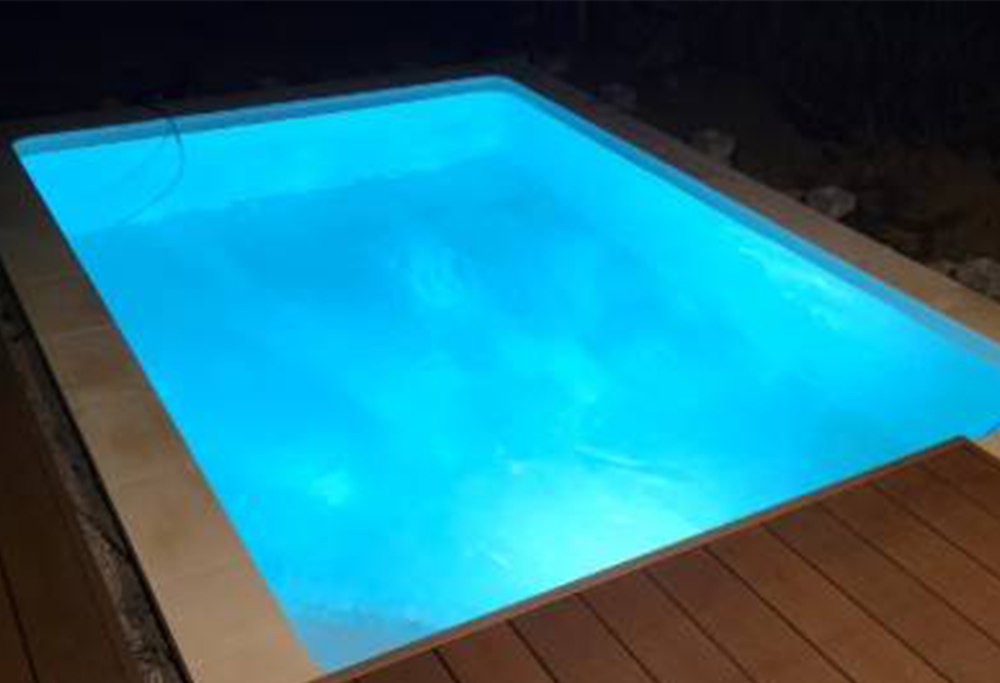

POOLPOOLPOOLPOOL
MAGILINE POOL
POOL MADE IN FRANCE

マジラインプールとは
マジラインは、1994年創業のフランスの家庭用プールメーカーです。お客様のご希望に合わせて装備を選べるオーダーメードのプールで、美しい見た目と、自動管理・環境への配慮を両立しています。
一工業はマジラインプールの正規施工販売店として、設計・施工から点検・メンテナンスまで担当します。
1994年
フランスで創業
35カ国
世界での設置国数
50,000台以上
世界での設置実績
87件
取得した国際特許
※数値はMagiline Japan公式サイトの掲載情報です。
- CUSTOM MADE完全オーダーメードご希望やご予算に合わせて、装備を選んでつくるプールです。
- SMART & ECONOMIC自動管理で、経済的日々の管理の手間と、水・電気・薬品の消費を抑えた設計です。
- MADE IN FRANCEフランス産保証ラベルフランス産保証ラベルを取得したプールメーカーです。
Reason
Reason
一工業が選ばれる理由
01
設計からアフターまで一貫
窓口がひとつで済みます。
02
丁寧なヒアリングと提案
使う人・使い方から設計します。
03
外構も土木も自社で
プールまわりの舗装・フェンス・排水までまとめてご相談いただけます。
Scene
Scene
プールのある暮らし

戸建ての庭
家族や子どものためのプール

ホテル・施設
宿泊施設・スポーツ施設などのプール
Works
Works
施工事例
プール千葉県〇〇｜プール設置工事
サイズ・工期：【要確認】
プール千葉県〇〇｜プール設置工事
サイズ・工期：【要確認】

プール千葉県〇〇｜プール設置工事
サイズ・工期：【要確認】
Flow
Flow
工事の流れ
各ステップの目安期間はお見積りの際にお伝えします。
- STEP 01
お問い合わせ
- STEP 02
現地調査・ヒアリング
- STEP 03
設計・お見積り
- STEP 04
ご契約
- STEP 05
施工
- STEP 06
引き渡し・使い方説明
- STEP 07
定期点検・メンテナンス

掘削から基礎、プール本体の設置、まわりの仕上げまで自社で進めます。
FAQ
FAQ
プールのよくあるご質問
Q.どのくらいの広さがあれば設置できますか？＋
A.
敷地の形状や周りの状況によって変わります。現地調査のうえ、設置できるサイズをご提案します。
Q.工期はどのくらいですか？＋
A.
プールの大きさや設置場所によって異なります。お見積りの際に目安をお伝えします。
Q.維持費・電気代・水道代の目安は？＋
A.
サイズやろ過設備によって変わります。ご相談の際に、使い方に合わせてご説明します。
Q.冬場や使わない時期の管理は？＋
A.
時期に合わせた管理方法をご案内します。点検・メンテナンスもご相談ください。
Q.ホテル・施設の大型プールにも対応できますか？＋
A.
はい。戸建てからホテルまで対応しています。
Contact
プールの無料相談・お見積り
次の内容がわかると、ご提案がスムーズです。わからない項目は空欄のままで大丈夫です。
- ✓設置場所（戸建て／別荘／施設）
- ✓おおよその広さ・希望サイズ
- ✓ご予算
- ✓希望時期
- ✓写真（あれば）